星潮學院｜英雄畫風全圖鑑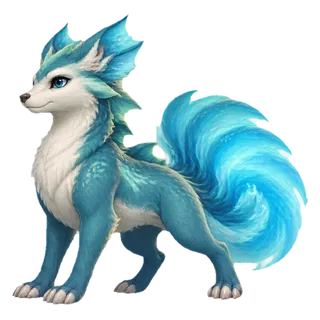
潮光獸
E 級 · 水屬性
tideglow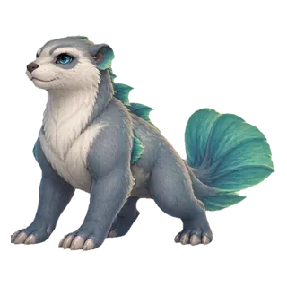
石礁鰭
E 級 · 土屬性
pebblefin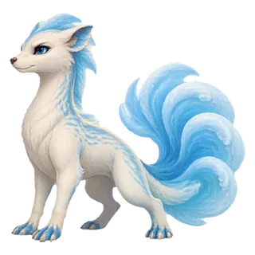
泡沫貂
E 級 · 水屬性
foamferret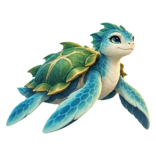
海芽龜
E 級 · 木屬性
seasprout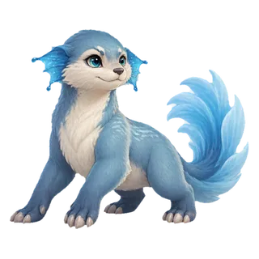
霧潮獺
E 級 · 水屬性
mistotter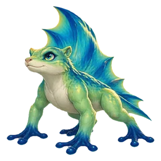
帆翼蛙
E 級 · 木屬性
sailskipper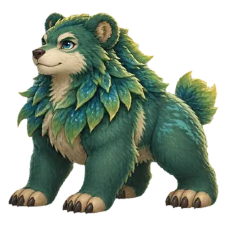
藻潮熊
E 級 · 木屬性
kelpcub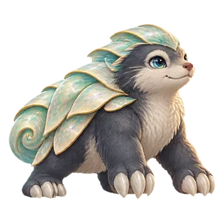
貝甲鼴
E 級 · 金屬性
shellmole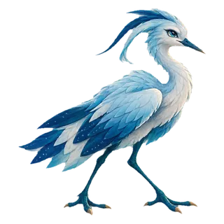
星汐鷺
E 級 · 金屬性
starheron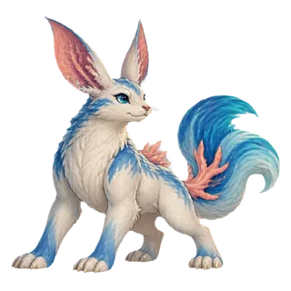
礁月兔
E 級 · 土屬性
reefrabbit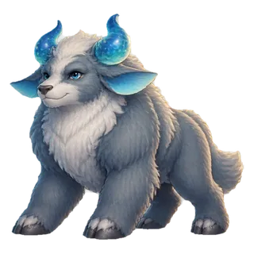
泡泡犛
E 級 · 土屬性
bubbleyak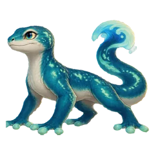
灣光守宮
E 級 · 土屬性
covegecko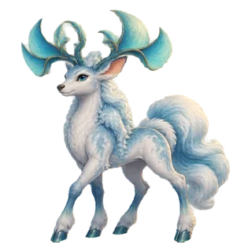
雲帆鹿
D 級 · 木屬性
cloudsail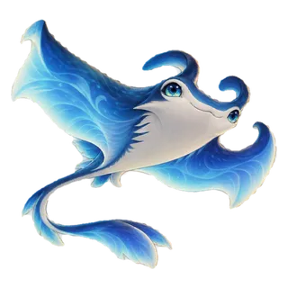
月帆魟
D 級 · 水屬性
moonmanta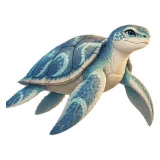
漂航龜
D 級 · 土屬性
driftturtle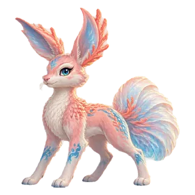
珊枝兔
D 級 · 木屬性
coralhare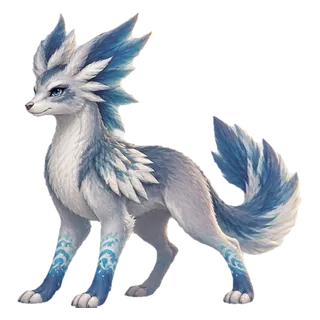
海風狼
D 級 · 木屬性
gullwolf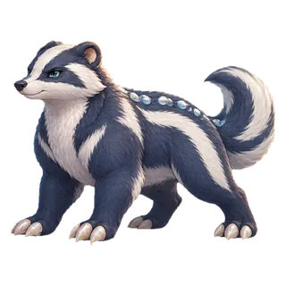
珠礁獾
D 級 · 金屬性
pearlbadger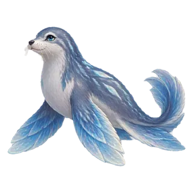
雨紋海豹
D 級 · 水屬性
rainseal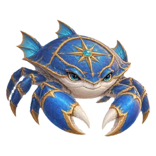
羅盤蟹
D 級 · 金屬性
compasscrab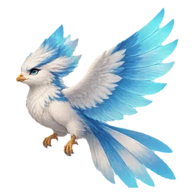
雲鰭雀
D 級 · 火屬性
cloudfinch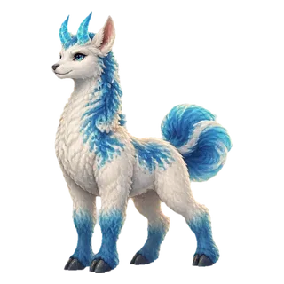
潮角駝
D 級 · 土屬性
tidellama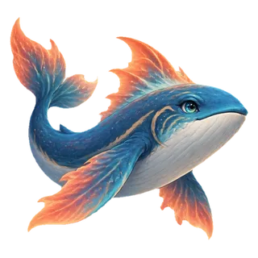
珊火鯨
C 級 · 火屬性
coralflare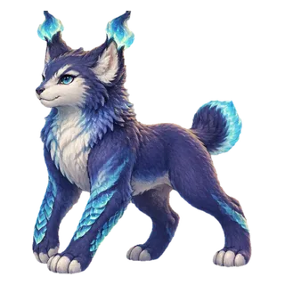
燈潮猁
C 級 · 火屬性
lanternlynx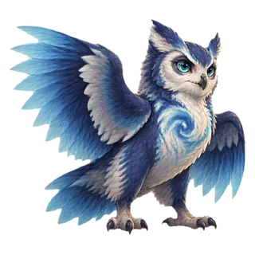
流向鴞
C 級 · 水屬性
currentowl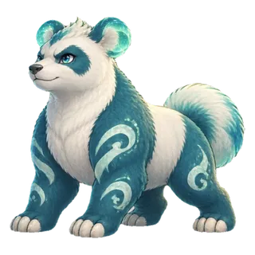
海璃貓熊
C 級 · 金屬性
seaglasspanda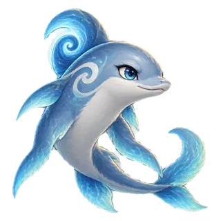
旋潮豚
C 級 · 水屬性
cyclonedolphin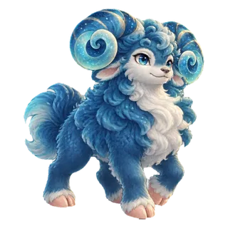
沉星盤羊
C 級 · 土屬性
sunkenram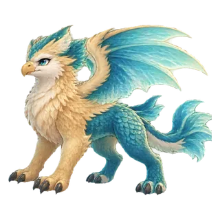
礁翼獅鷲
C 級 · 土屬性
reefgryphon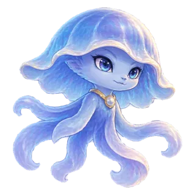
回音水母
C 級 · 水屬性
echojelly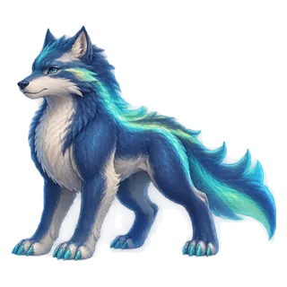
極潮狼
B 級 · 火屬性
aurorawolf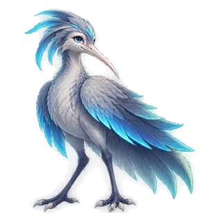
霧電朱鷺
B 級 · 火屬性
stormibis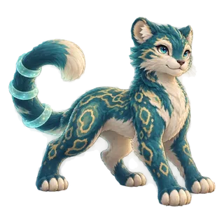
航圖豹
B 級 · 木屬性
mapleopard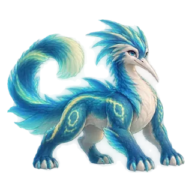
潮環龍
B 級 · 水屬性
tideserpent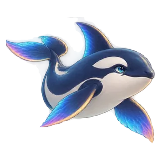
稜潮虎鯨
B 級 · 金屬性
prismorca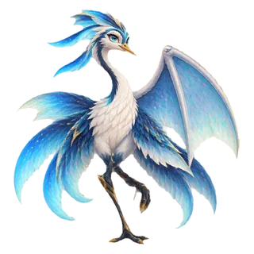
彗帆鶴
B 級 · 火屬性
cometcrane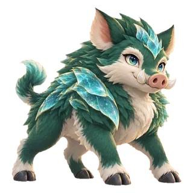
璃甲野豬
B 級 · 金屬性
crystalboar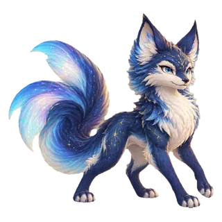
星霧狐
A 級 · 水屬性
nebulafox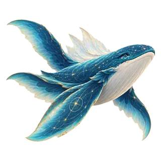
天圖鯨
A 級 · 土屬性
atlaswhale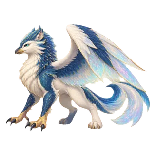
歐泊獅鷲
A 級 · 金屬性
opalgriffin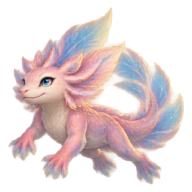
曙光六角龍
A 級 · 火屬性
solaraxolotl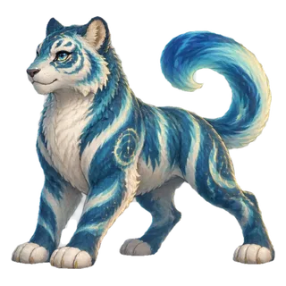
經緯潮虎
A 級 · 金屬性
meridiantiger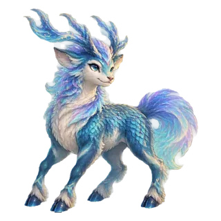
極航麟
S 級 · 木屬性
aurorakirin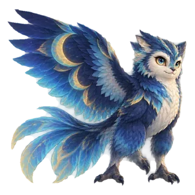
蝕光夜鴞
S 級 · 火屬性
eclipseowl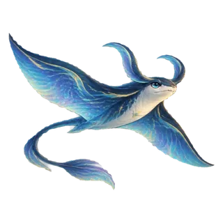
星界帆魟
S 級 · 水屬性
stellarmanta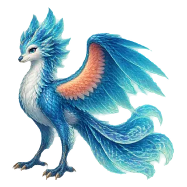
潮汐鳳鳥
S 級 · 火屬性
tidephoenix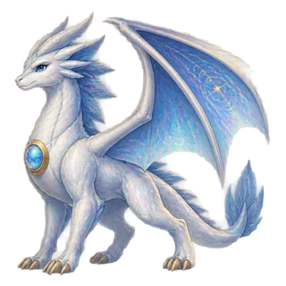
蒼穹璃龍
SS 級 · 金屬性
aetherdragon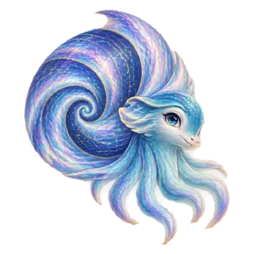
宙海鸚鵡螺
SS 級 · 水屬性
cosmicnautilus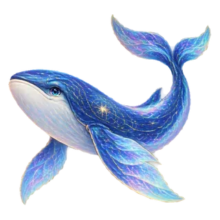
無垠星鯨
SS 級 · 水屬性
infinitywhale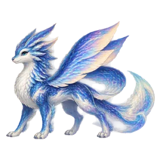
星潮萬象獸
SSS 級 · 土屬性
astraltide棉花糖
E 級 · 金屬性
maltese奶茶
E 級 · 土屬性
pig浪花
E 級 · 水屬性
otter芒果
E 級 · 火屬性
fox月亮
E 級 · 木屬性
rabbit鈴耳跳鼠
E 級 · 金屬性
w2-belljerboa銀針刺蝟
E 級 · 金屬性
w2-pinhedgehog銅鈕甲蟲
E 級 · 金屬性
w2-buttonbeetle鏡羽海鸚
D 級 · 金屬性
w2-mirrorpuffin磁環螳螂
D 級 · 金屬性
w2-magnetmantis齒輪穿山甲
C 級 · 金屬性
w2-gearpangolin銀梭劍魚
B 級 · 金屬性
w2-silvermarlin金鐘水母
A 級 · 金屬性
w2-belljelly星秤天獸
S 級 · 金屬性
w2-scalebeast鎏金千足龍
SS 級 · 金屬性
w2-gildedmyriapod蘑帽樹蛙
E 級 · 木屬性
w2-mushroomfrog豆莢毛蟲
E 級 · 木屬性
w2-podcaterpillar苔球小獾
E 級 · 木屬性
w2-mossbadger花傘螺
D 級 · 木屬性
w2-flowersnail竹節螳
D 級 · 木屬性
w2-bamboomantis莓冠松鼠
C 級 · 木屬性
w2-berrysquirrel楓翼飛蜥
C 級 · 木屬性
w2-mapleglider蘭舟蜂
B 級 · 木屬性
w2-orchidbee古榕樹懶
A 級 · 木屬性
w2-banyansloth森冠麋王
SS 級 · 木屬性
w2-forestmoose滴露海牛
E 級 · 水屬性
w2-dewmanatee泡泡海葵
E 級 · 水屬性
w2-bubbleanemone雨靴小鴨
D 級 · 水屬性
w2-rainduck緞帶水黽
D 級 · 水屬性
w2-ribbonskater冰帆魷
C 級 · 水屬性
w2-icesquid泉冠蠑螈
C 級 · 水屬性
w2-springaxolotl琉璃海馬
B 級 · 水屬性
w2-glassseahorse潮輪鴨嘴獸
B 級 · 水屬性
w2-tideplatypus冰川白鯨
A 級 · 水屬性
w2-glacierbeluga深潮星螺
S 級 · 水屬性
w2-abyssnautilus火絨壁虎
E 級 · 火屬性
w2-embergecko炭羽麻雀
E 級 · 火屬性
w2-sparrowcoal燈籠螢
D 級 · 火屬性
w2-lanternfirefly辣椒火螈
D 級 · 火屬性
w2-peppernewt赤冠火雞
C 級 · 火屬性
w2-cinderrooster熔爐野豬
B 級 · 火屬性
w2-furnaceboar彗尾袋鼠
B 級 · 火屬性
w2-cometkangaroo日輪蓮靈
A 級 · 火屬性
w2-sunlotus鳳羽鳴蟬
S 級 · 火屬性
w2-phoenixcricket曙焰獅蠍
SS 級 · 火屬性
w2-dawnmanticore卵石袋熊
E 級 · 土屬性
w2-pebblewombat陶罐鼴鼠
E 級 · 土屬性
w2-claymole砂帆耳狐
D 級 · 土屬性
w2-sandfennec琥珀工蟻
D 級 · 土屬性
w2-amberant晶簇海星
C 級 · 土屬性
w2-crystalstar梯田犰狳
C 級 · 土屬性
w2-terracedillo峽谷山貘
B 級 · 土屬性
w2-canyontapir晶洞章魚
A 級 · 土屬性
w2-geodeoctopus山脊岩犛
S 級 · 土屬性
w2-mountainyak萬象星陸龜
SSS 級 · 土屬性
w2-worldtortoise磁鼻小象
E 級 · 金屬性
w3-magnetelephant芽帽樹懶
E 級 · 木屬性
w3-sproutsloth露珠海牛
E 級 · 水屬性
w3-dewdungong暖爐企鵝
E 級 · 火屬性
w3-stovepenguin陶罐袋熊
E 級 · 土屬性
w3-potwombat銅翼飛魚
D 級 · 金屬性
w3-copperflyfish蓮葉跳蛙
D 級 · 木屬性
w3-lotusfrog冰鈴海豹
D 級 · 水屬性
w3-icebellseal燈芯小駝
D 級 · 火屬性
w3-wickcamel麥穗土撥鼠
D 級 · 土屬性
w3-wheatmarmot銀弦蜂鳥
C 級 · 金屬性
w3-harphummingbird竹笛螳螂
C 級 · 木屬性
w3-flutemantis潮鏡墨魚
C 級 · 水屬性
w3-mirrorcuttle火絨耳狐
C 級 · 火屬性
w3-tinderfennec砂漏長嘴獸
C 級 · 土屬性
w3-hourglassshrew鎏金扇鶴
B 級 · 金屬性
w3-giltfancrane花鐘水豚
B 級 · 木屬性
w3-flowercapybara星泡章魚
B 級 · 水屬性
w3-starbubbleoctopus炭羽走鵑
B 級 · 火屬性
w3-coalroadrunner琉璃犰狳
B 級 · 土屬性
w3-glassarmadillo天秤靈鷲
A 級 · 金屬性
w3-balancevulture星藤長頸鹿
A 級 · 木屬性
w3-vinegiraffe月帆旗魚
A 級 · 水屬性
w3-moonsailfish赤霞孔雀
A 級 · 火屬性
w3-sunsetpeacock玉階盤角羊
A 級 · 土屬性
w3-jadeibex極星機巧鹿
S 級 · 金屬性
w3-polarmechdeer千葉夢貘
S 級 · 木屬性
w3-dreamtapir虹潮蝠鱝
S 級 · 水屬性
w3-rainbowmanta曜日冠獅
S 級 · 火屬性
w3-suncrestlion星砂巨龜
S 級 · 土屬性
w3-stardunetortoise鈴盾小獾
E 級 · 金屬性
w4-bellbadger三葉松鼠
E 級 · 木屬性
w4-cloversquirrel溪帽鴨嘴獸
E 級 · 水屬性
w4-brookplatypus炭團倉鼠
E 級 · 火屬性
w4-coalhamster卵石鼴鼠
E 級 · 土屬性
w4-pebblemole銀匙小鷺
E 級 · 金屬性
w4-spoonibis苔袋無尾熊
E 級 · 木屬性
w4-mosskoala貝翼海鸚
E 級 · 水屬性
w4-shellpuffin暖足壁虎
E 級 · 火屬性
w4-embergecko橡盔山豬
E 級 · 土屬性
w4-acornboar齒輪跳鼠
D 級 · 金屬性
w4-gearjerboa蕨尾狐猴
D 級 · 木屬性
w4-fernlemur冰匙海獺
D 級 · 水屬性
w4-iceotter燈肚奇異鳥
D 級 · 火屬性
w4-lanternkiwi陶背刺蝟
D 級 · 土屬性
w4-clayhedgehog銅扣白鼬
D 級 · 金屬性
w4-copperstoat蘭耳小螈
D 級 · 木屬性
w4-orchidnewt帆冠小鴨
D 級 · 水屬性
w4-sailduck椒耳野兔
D 級 · 火屬性
w4-pepperhare岩袋短尾矮袋鼠
D 級 · 土屬性
w4-boulderquokka符盾浣熊
C 級 · 金屬性
w4-runeraccoon夢芽幼鹿
C 級 · 木屬性
w4-dreamfawn霜掌山貓
C 級 · 水屬性
w4-frostlynx爐心小熊貓
C 級 · 火屬性
w4-hearthpanda晶尾小臭鼬
C 級 · 土屬性
w4-crystalskunk砧角綿羊
C 級 · 金屬性
w4-anvilram葉篷松貂
C 級 · 木屬性
w4-canopymarten霧翼燕鷗
C 級 · 水屬性
w4-misttern日傘傘蜥
C 級 · 火屬性
w4-sunfrill沙丘鼠兔
C 級 · 土屬性
w4-dunepika時針角鹿
B 級 · 金屬性
w4-clockstag樹窩梟熊
B 級 · 木屬性
w4-groveowlbear潮鬃靈馬
B 級 · 水屬性
w4-tidekelpie燼角麒麟
B 級 · 火屬性
w4-cinderkirin嶺背犛牛
B 級 · 土屬性
w4-ridgeyak曙翼小獅鷲
B 級 · 金屬性
w4-auroragrifflet月蛾靈貓
B 級 · 木屬性
w4-moonmothcat冰帆獨角鯨
B 級 · 水屬性
w4-glaciernarwhal日冠紅隼
B 級 · 火屬性
w4-solarkestrel琥角野牛
B 級 · 土屬性
w4-amberbison誓翼角鷹
A 級 · 金屬性
w4-oathhippogryph青芽長龍
A 級 · 木屬性
w4-verdantlong秘潮星魟
A 級 · 水屬性
w4-arcanemanta晨焰巨鵬
A 級 · 火屬性
w4-dawnroc臺岩麟獸
A 級 · 土屬性
w4-terracekirin銀曜守龍
S 級 · 金屬性
w4-silverwarden夢林守靈
S 級 · 木屬性
w4-dreamgroveguardian月灣靈鯨
S 級 · 水屬性
w4-moonwhaleling日鬃天馬
S 級 · 火屬性
w4-sunmanepegasus界種巨龜
S 級 · 土屬性
w4-worldseedturtle金羽雲靈
E 級 · 金屬性
cloud-scout-metal青枝雲鹿
E 級 · 木屬性
cloud-scout-wood碧波雲鰭
D 級 · 水屬性
cloud-scout-water焰尾雲狐
D 級 · 火屬性
cloud-scout-fire砂角雲羊
C 級 · 土屬性
cloud-scout-earth金翼天隼
B 級 · 金屬性
cloud-warden-metal蒼木雲龍
B 級 · 木屬性
cloud-warden-wood滄海雲鯨
A 級 · 水屬性
cloud-warden-water赤焰天凰
A 級 · 火屬性
cloud-warden-fire磐角雲王
S 級 · 土屬性
cloud-warden-earth銀甲齒輪蟹
E 級 · 金屬性
crab-scout-metal苔枝寄居蟹
D 級 · 木屬性
crab-scout-wood泡珠潮蟹
D 級 · 水屬性
crab-scout-water熔殼火蟹
C 級 · 火屬性
crab-scout-fire砂丘岩蟹
E 級 · 土屬性
crab-scout-earth金城堡壘蟹
B 級 · 金屬性
crab-warden-metal古樹森王蟹
A 級 · 木屬性
crab-warden-wood深藍珊瑚王
A 級 · 水屬性
crab-warden-water黑曜熔岩蟹
S 級 · 火屬性
crab-warden-fire峽谷巨岩蟹
B 級 · 土屬性
crab-warden-earth金晶幼像
D 級 · 金屬性
golem-scout-metal藤玉幼像
D 級 · 木屬性
golem-scout-wood水晶幼像
C 級 · 水屬性
golem-scout-water赤晶幼像
E 級 · 火屬性
golem-scout-fire琥珀幼像
E 級 · 土屬性
golem-scout-earth白金晶皇
A 級 · 金屬性
golem-warden-metal古森玉巨像
A 級 · 木屬性
golem-warden-wood冰瀑晶巨像
S 級 · 水屬性
golem-warden-water熔冠赤巨像
B 級 · 火屬性
golem-warden-fire山嶽琥珀王
B 級 · 土屬性
golem-warden-earth銀鈴月蛾
D 級 · 金屬性
moth-scout-metal蘭葉燈蛾
C 級 · 木屬性
moth-scout-wood水珠月蛾
E 級 · 水屬性
moth-scout-water暖燈火蛾
E 級 · 火屬性
moth-scout-fire晶角琥蛾
D 級 · 土屬性
moth-scout-earth銀輪蛾皇
A 級 · 金屬性
moth-warden-metal古蕨蛾后
S 級 · 木屬性
moth-warden-wood瀑翼潮后
B 級 · 水屬性
moth-warden-water曜日燈凰
B 級 · 火屬性
moth-warden-fire岩冠晶蛾
A 級 · 土屬性
moth-warden-earth銀鰓靈螈
C 級 · 金屬性
newt-scout-metal蕨尾靈螈
E 級 · 木屬性
newt-scout-wood泡珠靈螈
E 級 · 水屬性
newt-scout-water燼尾火螈
D 級 · 火屬性
newt-scout-fire砂鰓靈螈
D 級 · 土屬性
newt-scout-earth白金槍螈
S 級 · 金屬性
newt-warden-metal古柳森螈
B 級 · 木屬性
newt-warden-wood深潮冠螈
B 級 · 水屬性
newt-warden-water熔甲炎螈
A 級 · 火屬性
newt-warden-fire山晶巨螈
A 級 · 土屬性
newt-warden-earth銀錢鱗獸
E 級 · 金屬性
pangolin-scout-metal松果鱗獸
E 級 · 木屬性
pangolin-scout-wood珠貝鱗獸
D 級 · 水屬性
pangolin-scout-water炭星鱗獸
D 級 · 火屬性
pangolin-scout-fire蜜晶鱗獸
C 級 · 土屬性
pangolin-scout-earth金盾鱗騎
B 級 · 金屬性
pangolin-warden-metal古木鱗衛
B 級 · 木屬性
pangolin-warden-wood冰礁鱗王
A 級 · 水屬性
pangolin-warden-water熔脊鱗王
A 級 · 火屬性
pangolin-warden-fire山嶺鱗皇
S 級 · 土屬性
pangolin-warden-earth銀傘菇靈
E 級 · 金屬性
sprite-scout-metal花帽菇靈
D 級 · 木屬性
sprite-scout-wood水滴菇靈
D 級 · 水屬性
sprite-scout-water炭足火菇
C 級 · 火屬性
sprite-scout-fire晶洞菇靈
E 級 · 土屬性
sprite-scout-earth金塔菇騎
B 級 · 金屬性
sprite-warden-metal古橡菇賢
A 級 · 木屬性
sprite-warden-wood瀑傘潮靈
A 級 · 水屬性
sprite-warden-water熔頂巨菇
S 級 · 火屬性
sprite-warden-fire峽岩菇王
B 級 · 土屬性
sprite-warden-earth銀羅盤龍
D 級 · 金屬性
drake-scout-metal海蕨幼龍
D 級 · 木屬性
drake-scout-wood珠泡幼龍
C 級 · 水屬性
drake-scout-water燼鬃幼龍
E 級 · 火屬性
drake-scout-fire砂甲幼龍
E 級 · 土屬性
drake-scout-earth白金星龍
A 級 · 金屬性
drake-warden-metal古灣森龍
A 級 · 木屬性
drake-warden-wood深淵瀑龍
S 級 · 水屬性
drake-warden-water曜日炎龍
B 級 · 火屬性
drake-warden-fire化石岩龍
B 級 · 土屬性
drake-warden-earth星鑄裁決者
B 級 · 金屬性
wave4-metal-01鋼翼天災龍
A 級 · 金屬性
wave4-metal-02重裝獅皇
B 級 · 金屬性
wave4-metal-03天穹堡壘獸
S 級 · 金屬性
wave4-metal-04雷鑽獨角王
B 級 · 金屬性
wave4-metal-05軌道戰蠍
A 級 · 金屬性
wave4-metal-06磁環蛇帝
B 級 · 金屬性
wave4-metal-07金剛六足王
S 級 · 金屬性
wave4-metal-08斷空刃鷲
B 級 · 金屬性
wave4-metal-09齒輪巨顎
A 級 · 金屬性
wave4-metal-10古森機神
B 級 · 木屬性
wave4-wood-11荊冠暴君
A 級 · 木屬性
wave4-wood-12神木巨象
B 級 · 木屬性
wave4-wood-13翠甲螳皇
S 級 · 木屬性
wave4-wood-14藤鎖九頭獸
B 級 · 木屬性
wave4-wood-15孢子戰車王
A 級 · 木屬性
wave4-wood-16森羅鹿帝
B 級 · 木屬性
wave4-wood-17棘翼魔王
S 級 · 木屬性
wave4-wood-18碧核巨熊
B 級 · 木屬性
wave4-wood-19根脈盤龍
A 級 · 木屬性
wave4-wood-20深淵鐵鯨
B 級 · 水屬性
wave4-water-21冰冠九首龍
A 級 · 水屬性
wave4-water-22寒潮戰艦獸
B 級 · 水屬性
wave4-water-23渦流巨章
S 級 · 水屬性
wave4-water-24霜刃虎王
B 級 · 水屬性
wave4-water-25幽海機魟
A 級 · 水屬性
wave4-water-26極冰雙顎
B 級 · 水屬性
wave4-water-27海嘯鋼鯊
S 級 · 水屬性
wave4-water-28凍星巨龜
B 級 · 水屬性
wave4-water-29滄溟王座獸
A 級 · 水屬性
wave4-water-30鐵鉤跳蛛
E 級 · 金屬性
w5-hookspider苔燈蝸牛
E 級 · 木屬性
w5-mosssnail潮壺寄居靈
E 級 · 水屬性
w5-tideurn煤球鬥雞
E 級 · 火屬性
w5-coalrooster裂岩蠑螈
E 級 · 土屬性
w5-crackedsalamander鋼鬚鯰衛
D 級 · 金屬性
w5-steelcatfish藤籠棘球
D 級 · 木屬性
w5-vinecage霧傘水母
D 級 · 水屬性
w5-mistumbrella熔盔甲蟲
D 級 · 火屬性
w5-furnacebeetle砂鼓角蜥
D 級 · 土屬性
w5-drumlizard鏡甲劍螳
C 級 · 金屬性
w5-mirrormantis荊冠豪豬
C 級 · 木屬性
w5-thornporcupine漩齒鸚鵡螺
C 級 · 水屬性
w5-vortexnautilus燼翼蝠王
C 級 · 火屬性
w5-cinderbat岩槌袋獾
C 級 · 土屬性
w5-hammerdevil鎖環犀衛
B 級 · 金屬性
w5-chainrhino古根鱷衛
B 級 · 木屬性
w5-rootcrocodile寒潮海蛇
B 級 · 水屬性
w5-frostseasnake焰鬃野牛
B 級 · 火屬性
w5-blazebison晶峰駝獸
B 級 · 土屬性
w5-crystalcamel鐘樓獅鷲
A 級 · 金屬性
w5-belfrygriffin藤城巨猿
A 級 · 木屬性
w5-vinecitadelape瀑冠鯊王
A 級 · 水屬性
w5-waterfallshark火輪翼蛇
A 級 · 火屬性
w5-firewheelsnake碑林猛獁
A 級 · 土屬性
w5-obeliskmammoth星鑄螺旋龍
S 級 · 金屬性
w5-helixdragon萬蕨森皇
S 級 · 木屬性
w5-fernsovereign深穹鯨皇
S 級 · 水屬性
w5-abyssfirmament熔日鳳皇
S 級 · 火屬性
w5-moltensunphoenix隕環山王
S 級 · 土屬性
w5-meteorarmorbear礦牙幼獸
E 級 · 金屬性
w6-oremaw荊芽妖苗
E 級 · 木屬性
w6-bramblesprig水窪跳怪
E 級 · 水屬性
w6-puddlehopper煤帽小妖
E 級 · 火屬性
w6-sootimp塵牙地獸
E 級 · 土屬性
w6-dusttusk銅背甲蟲
E 級 · 金屬性
w6-brassscarab根牙咬獸
E 級 · 木屬性
w6-rootgnasher礁背彈魚
E 級 · 水屬性
w6-reefskipper燭耳蝙蝠
E 級 · 火屬性
w6-candlebat泥團吞獸
E 級 · 土屬性
w6-mudmuncher鐵鼻野豬
D 級 · 金屬性
w6-ironsnout棘角荒羊
D 級 · 木屬性
w6-thornhorn霜牙幼狼
D 級 · 水屬性
w6-frostjaw灰焰迅足
D 級 · 火屬性
w6-ashraptor板岩爬獸
D 級 · 土屬性
w6-slatecrawler輪牙獵犬
D 級 · 金屬性
w6-cogjawhound澤葉潛獸
D 級 · 木屬性
w6-marshstalker鹽礁鉗獸
D 級 · 水屬性
w6-brinesnapper炭角山獸
D 級 · 火屬性
w6-emberhorn石場巨蟾
D 級 · 土屬性
w6-quarrytoad庫盾巨蟹
C 級 · 金屬性
w6-vaultcrab空木樹衛
C 級 · 木屬性
w6-hollowbark霜步雪怪
C 級 · 水屬性
w6-rimewalker窯甲重獸
C 級 · 火屬性
w6-kilnmauler頁岩角獸
C 級 · 土屬性
w6-shalehorn雷鉤翼獸
C 級 · 金屬性
w6-stormtalon暮菇巨靈
C 級 · 木屬性
w6-gloamspore深鰭海獸
C 級 · 水屬性
w6-deepfin熔牙巨蜥
C 級 · 火屬性
w6-lavafang峽殼巨甲
C 級 · 土屬性
w6-canyonbeetle盾翼石像
B 級 · 金屬性
w6-aegisgargoyle野月靈豹
B 級 · 木屬性
w6-wildmoonpanther暴雪翼龍
B 級 · 水屬性
w6-blizzarddrake爐鎧巨像
B 級 · 火屬性
w6-forgecolossus臺地雙首獸
B 級 · 土屬性
w6-mesahydra銀刺蠍獅
B 級 · 金屬性
w6-argentmanticore夢棘角王
B 級 · 木屬性
w6-dreambriarbeast淵瞳蜥王
B 級 · 水屬性
w6-abyssalisk冠焰獅王
B 級 · 火屬性
w6-crownflamebeast黑曜牙王
B 級 · 土屬性
w6-obsidiantusk天鑄翼鯨
A 級 · 金屬性
w6-skyforgeleviathan古花巨神
A 級 · 木屬性
w6-ancientbloomtitan風暴海龍
A 級 · 水屬性
w6-tempestseadragon燼日長龍
A 級 · 火屬性
w6-cindersunwyrm山心巨像
A 級 · 土屬性
w6-mountainheartgolem曙鋼龍皇
S 級 · 金屬性
w6-dawnsteelwyrm翠境龍皇
S 級 · 木屬性
w6-emeraldgrovewyrm冰潮龍皇
S 級 · 水屬性
w6-glacialtidewyrm赤誓龍皇
S 級 · 火屬性
w6-emberoathwyrm深岩龍皇
S 級 · 土屬性
w6-deepstonewyrm